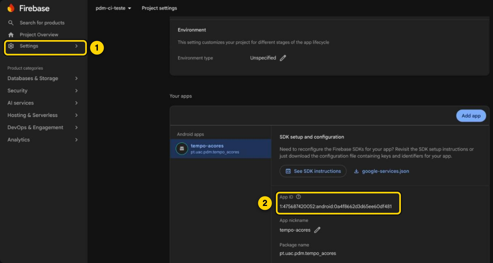
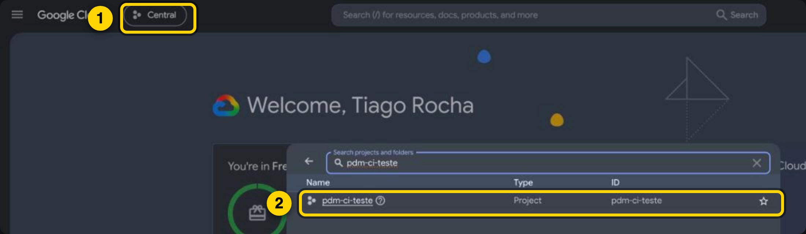
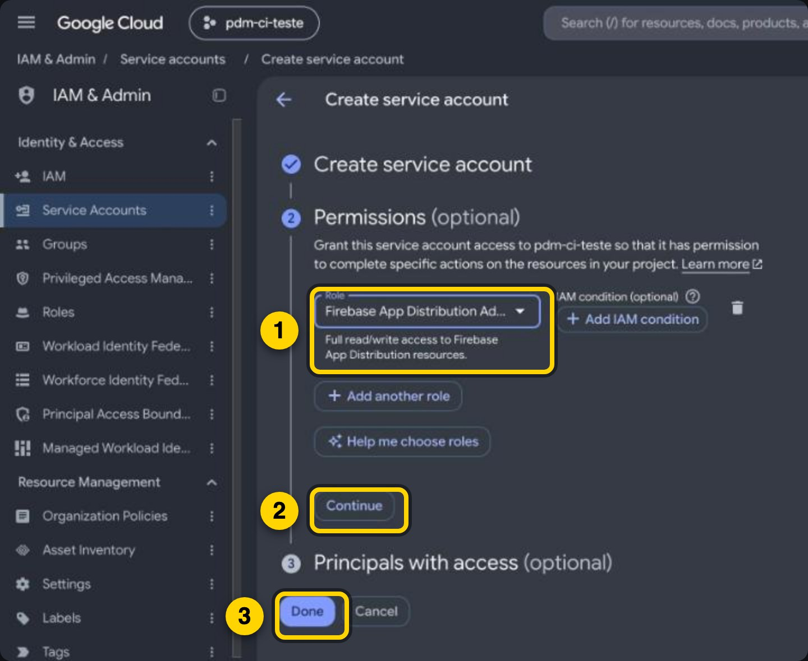
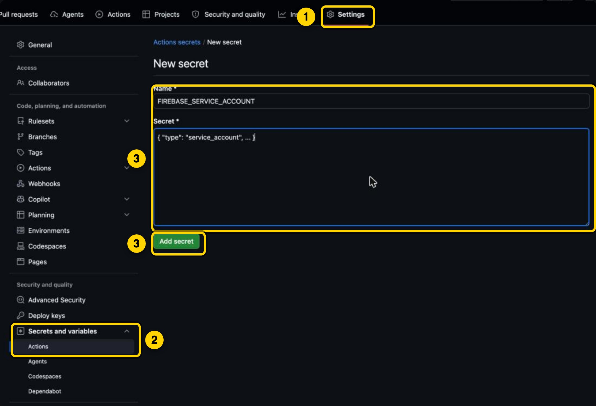
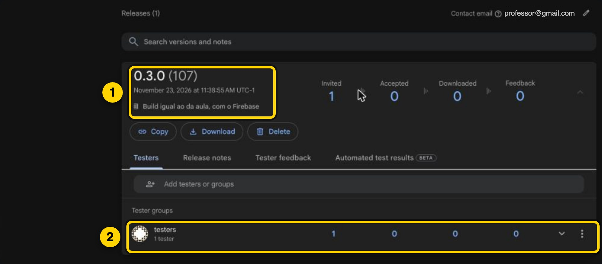

Aula 28 · Semana 12 · Segunda, 23 de novembro de 2026 · 16:00 às 18:00
Platform channels e builds automáticos
Teoria: como o Flutter fala com o Kotlin e o Swift, três casos reais, e o que é CI/CD. Workshop: cada commit no main do vosso projeto passa a gerar sozinho um APK assinado, numa Release do GitHub.
Sem repositório da aula: tudo no projeto do grupo Precisam da chave da aula de sexta
Plano: 16:00 a 16:35 platform channels e os três casos; 16:35 a 16:50 CI/CD; 16:50 a 17:15 passos 1 a 3 (segredos, workflow, PR); o build demora uns 10 minutos, e enquanto corre vêem-se os erros comuns; 17:25 a 17:40 a Release automática no telemóvel e o Firebase automático (se encravar, saltam para o ícone); 17:40 a 17:50 o ícone do grupo; 17:50 a 18:00 ronda final. À entrada: cada grupo confirma que tem o computador com a chave da sexta (C:\dev\upload-keystore.jks) e a palavra-passe. Quem criou o repositório do grupo tem de estar presente, porque só o dono pode criar segredos. O grupo da Ekaterina, Inês e Palina ainda não tem a assinatura: começa pelos passos 1 a 4 da aula de sexta e só depois faz este workshop.
No fim desta aula consegues
Explicar o que é um platform channel e quando se usa MethodChannel ou EventChannel.
Reconhecer, em apps reais, quando o Flutter precisa de código nativo e de que forma.
Escolher um package no pub.dev com critérios, antes de escrever o teu próprio canal.
Dizer a diferença entre CI e CD e onde ficam os segredos de um build.
Ter a app do grupo a gerar sozinha um APK assinado a cada commit no main.
Platform channel: o Dart pede, o nativo responde
O Flutter não sabe nada do telemóvel: pede ao sistema, que só fala Kotlin ou Swift.
Tudo vai em bytes, por isso só passam primitivos, listas e mapas.
A resposta chega num Future: o ecrã não fica à espera.
Na web não há Kotlin nem Swift: MissingPluginException.
Para os testes: mensagens assíncronas entre o Dart e o nativo; só primitivos, listas e mapas.
O que dizer: o Flutter desenha tudo sozinho, mas não sabe nada do telemóvel. Para saber a bateria, abrir a câmara ou ler o NFC tem de perguntar ao sistema, e o sistema só fala Kotlin ou Swift. O canal é um intérprete entre as duas línguas: as mensagens vão em pacotes normalizados (o codec), uma de cada vez, e a resposta demora, por isso chega num Future. O image_picker e o geolocator que já usaram são exatamente isto, com o trabalho feito por outra pessoa. Um nome errado não dá erro de compilação: dá MissingPluginException quando a app corre. O nome é o contrato: tem de ser igual no Dart, no Kotlin e no Swift. Na figura: clicar repete a viagem, as teclas ↑ e ↓ mudam de modo (MethodChannel, EventChannel, web) e Z põe-na em ecrã inteiro.
O lado Dart: a chamada e o resultado
const canal = MethodChannel('pdm/bateria');
Future<int?> nivelDaBateria() async {
if (kIsWeb) return null; // na web não há nativo
try {
return await canal.invokeMethod<int>('nivel');
} on MissingPluginException {
return null; // plataforma sem código nativo
} on PlatformException catch (e) {
debugPrint('Bateria: ${e.code}'); // o nativo disse não
return null;
}
}O que dizer: no ecrã fica Text('Bateria: $nivel %'), ou nada quando vem null: uma funcionalidade opcional desaparece em silêncio, não mostra "erro". Duas exceções, duas histórias. MissingPluginException: não há ninguém do outro lado (web, desktop, ou o nome do canal mal escrito). PlatformException: há alguém, e respondeu com erro; o code serve para decidir, a message para os logs. Para testar sem telemóvel, o TestDefaultBinaryMessenger do flutter_test responde ao canal com um valor fixo, como o mocktail faz com um repository. Os imports: package:flutter/foundation.dart (o kIsWeb) e package:flutter/services.dart (o canal).
O lado Android, em Kotlin
override fun configureFlutterEngine(engine: FlutterEngine) {
super.configureFlutterEngine(engine)
val messenger = engine.dartExecutor.binaryMessenger
MethodChannel(messenger, "pdm/bateria")
.setMethodCallHandler { call, result ->
if (call.method == "nivel") {
val bm = getSystemService(BATTERY_SERVICE)
as BatteryManager
result.success(bm.getIntProperty(
BatteryManager.BATTERY_PROPERTY_CAPACITY))
} else result.notImplemented()
}
}O que dizer: isto é para ler, não para decorar. A função vai dentro de class MainActivity : FlutterActivity(). O canal regista-se uma vez, quando o motor do Flutter arranca, nunca dentro de um widget. call.method é o nome que o Dart mandou; result.success devolve o valor, result.error("CODIGO", "mensagem", null) chega ao Dart como PlatformException. Os imports que faltam no slide: android.os.BatteryManager, io.flutter.embedding.android.FlutterActivity, io.flutter.embedding.engine.FlutterEngine e io.flutter.plugin.common.MethodChannel. Uma alteração no Kotlin pede flutter run de novo: o hot reload só recarrega Dart.
O lado iOS, em Swift
func didInitializeImplicitFlutterEngine(
_ engineBridge: FlutterImplicitEngineBridge
) {
GeneratedPluginRegistrant.register(with: engineBridge.pluginRegistry)
let canal = FlutterMethodChannel(name: "pdm/bateria",
binaryMessenger: engineBridge.applicationRegistrar.messenger())
canal.setMethodCallHandler { call, result in
if call.method == "nivel" {
UIDevice.current.isBatteryMonitoringEnabled = true
result(Int(UIDevice.current.batteryLevel * 100))
} else { result(FlutterMethodNotImplemented) }
}
}O que dizer: a mesma ideia, outra língua. O modelo do Flutter que vocês têm já traz esta função vazia (só com a linha do GeneratedPluginRegistrant); o canal entra a seguir. Exemplos antigos na internet usam window?.rootViewController no application(didFinishLaunchingWithOptions:): com o modelo atual (o iOS por cenas) isso dá nil. No simulador o batteryLevel é -1, por isso a app mostraria -100: no telemóvel dá o valor certo. Sem Mac não se compila iOS; para ler chega.
Pedir uma vez ou ouvir sempre
MethodChannel EventChannel
Como Pergunta e resposta Stream: o nativo avisa quando muda No Dart await invokeMethod(...)receiveBroadcastStream().listenBateria Quanto tens agora? Avisa-me quando ligares o carregador Plugins image_picker, local_authgeolocator, sensors_plusApps Escolher foto no Instagram Corrida no Strava, mapa do Uber
Para os testes: MethodChannel é pedido e resposta, sempre assíncrono; EventChannel é um stream do nativo para o Dart.
O que dizer: a pergunta é "quem começa a conversa?". No MethodChannel é sempre o Dart: pergunta, espera, recebe. No EventChannel o Dart diz "estou a ouvir" e é o nativo que fala quando quer: a posição GPS a cada segundo numa corrida, o acelerómetro, o estado da bateria. Há uma terceira peça, o BasicMessageChannel, para mensagens soltas nos dois sentidos, que raramente se usa à mão. Um MethodChannel também pode ser chamado do nativo para o Dart (invokeMethod do lado Kotlin): vamos ver isso num dos casos reais.
Caso real 1: migrar sem perder dados
Antes: app nativa, desde 2008
Cada plataforma à sua maneira
Armazenamento local
definições, equipas favoritas
Armazenamento seguro
sessão do utilizador (token)
update
Depois: app em Flutter
Um canal: «storage antigo»
o Dart pede "lê a sessão antiga"
o nativo vai buscá-la onde estava
o Dart guarda-a no sítio novo
o utilizador nem dá por nada
OneFootball: milhões de utilizadores com dados guardados pela app antiga
Os packages do Flutter (shared_preferences, flutter_secure_storage) guardam com os seus nomes e formatos: não encontram o que a app antiga escreveu.
O que dizer (caso contado pelo professor, da OneFootball): a app de futebol existia em nativo desde 2008 e passou para Flutter. Se a primeira versão em Flutter pedisse login a toda a gente e esquecesse as equipas favoritas, perdiam-se utilizadores no dia do update. Os dados estavam no armazenamento local e no seguro de cada plataforma, cada um com as suas chaves. Exemplo concreto do porquê: o shared_preferences no Android acrescenta o prefixo flutter. a cada chave, por isso nunca lê uma chave gravada pela app antiga. A solução foi um canal que dá acesso unificado a esse armazenamento: o Dart pede, o Kotlin e o Swift vão buscar onde estava, e o Dart passa os dados para o sítio novo. Sem canal, não havia migração.
Caso real 2: o perfil numa stream
Antes: cada ecrã pergunta de tempos a tempos
Início, Notícias, Definições: "o perfil mudou?" a cada poucos segundos
chamadas repetidas, bateria gasta, e cada ecrã com uma versão diferente
Depois: uma stream, com replay
Nativo
guarda o último perfil
e avisa quando muda
Um ecrã começa a ouvir
recebe logo o perfil atual (o replay)
e depois só as mudanças
O EventChannel não guarda nada: quem começa a ouvir depois do último evento fica sem dados até à mudança seguinte.
O que dizer (OneFootball): o perfil do utilizador (equipas, idioma, sessão) vivia no lado nativo, e cada funcionalidade em Flutter fazia polling, ou seja, perguntava de tempos a tempos. Passou a ser uma stream por canal: quem quer o perfil ouve, e recebe quando muda. O problema: um ecrã que abre a meio não recebia nada até à mudança seguinte, porque o canal não repete o último evento. A solução foi o replay: guardar o último valor e entregá-lo a quem começa a ouvir. É o mesmo que um BehaviorSubject do RxDart, ou um ValueNotifier: quem chega recebe logo o valor atual. Ligação ao que já sabem: o ChangeNotifier do projeto faz isto do lado do Dart.
Caso real 3: videoconsultas e Apple Watch
Ecrã Flutter da consulta
Vídeo da chamada
view nativa da Amazon Chime
platform view: não há SDK Flutter
Botão do chat
Flutter manda: abre
Sala de espera
nativo avisa: acabou
Eventos da chamada
EventChannel: ligou, caiu,
o médico entrou
Apple Watch
ritmo cardíaco para a app
play e pausa do áudio
para o relógio
Sem SDK Flutter, o vídeo vem do nativo e encaixa-se no ecrã como uma platform view .
O que dizer (Nue Life, projeto em que o professor trabalhou em 2023): uma app de saúde mental com consultas por vídeo. O fornecedor de vídeo, Amazon Chime, só tinha SDK para Android e iOS. A solução teve três canais. 1) O vídeo é uma view nativa embutida no ecrã Flutter (no iOS um UiKitView), com os botões em Flutter por cima. 2) Um MethodChannel nos dois sentidos: o Flutter diz "abre o chat", o nativo diz "a sala de espera acabou, o médico entrou" (o nativo chama invokeMethod no Dart). 3) Outro canal fala com o Apple Watch pelo WatchConnectivity: o ritmo cardíaco vem do relógio para a app, e o play e a pausa do áudio vão da app para o relógio. Lição: quando um fornecedor não tem SDK Flutter, não é um beco sem saída, é uma semana de trabalho nativo.
Outras formas de falar com o nativo
O que é Exemplos
Plugin Um canal empacotado e partilhado no pub.dev camera, url_launcherPlugin federado Uma interface e um package por plataforma shared_preferencesPlatform view Um widget nativo dentro do ecrã Flutter Google Maps, WebView, anúncios FFI Chamar C ou Rust diretamente, sem canal sqlite3, criptografia
Para os testes: canal para APIs do sistema; FFI para bibliotecas C e desempenho; platform view para um widget nativo; plugin federado é uma interface com uma implementação por plataforma.
O que dizer: na prática, o primeiro passo é sempre procurar um plugin. Escrever um canal só quando não há, como no caso da Chime. Plugin federado: o shared_preferences é na verdade vários packages (_android, _foundation, _web), e alguém pode acrescentar Windows sem mexer no principal. Platform view: o google_maps_flutter é o mapa nativo da Google dentro do ecrã, e custa desempenho; o flutter_map que usaram desenha os tiles em Dart, não é platform view. FFI: sem mensagens nem serialização, microssegundos em vez de milissegundos; o package sqlite3 usa FFI e é mais rápido do que o sqflite, que usa um canal. O custo do FFI: memória gerida à mão e compilar a biblioteca para cada arquitetura.
Antes de instalar um package
Ver Onde Sinal de alarme
Pub points Cartão do package, até 160 Abaixo de 120 Uso Downloads e likes Quase ninguém o usa Manutenção Última versão, issues Um ano sem versão nova Quem publica Publisher verificado Sem site nem organização Licença Separador License GPL, ou nenhuma
Regra final: se dá para escrever em 50 linhas, não instales.
O que dizer: cada package é código de outra pessoa dentro da vossa app, com permissões e com as dependências dele. Um plugin abandonado parte no dia em que o Android ou o iOS mudam alguma coisa, e quem fica com o problema são vocês. Abre ao vivo o battery_plus no pub.dev (publisher fluttercommunity.dev, muito usado, atualizado) e compara com o canal que vimos: para o projeto, o plugin ganha. GPL: obriga a publicar o código da app inteira. flutter pub deps mostra o que cada package traz consigo.
CI e CD: o que já têm e o que falta
PR
o vosso código
CI
analyze e test
merge
no main
CD
APK assinado
Release no GitHub com o APK
e, opcional, os testers no Firebase
um build novo a cada commit
Já têm desde a sprint 1
o ficheiro ci.yml
diz se o código está são
Para os testes: CI verifica cada alteração; CD gera e entrega uma versão a cada alteração aceite.
O que dizer: CI, integração contínua: cada PR é verificado sozinho e diz se o código está são. CD, entrega contínua: cada merge gera uma versão instalável e diz que versão os testers têm. Na sexta fizeram tudo à mão: build no computador de um de vocês, arrastar o APK para o GitHub e para o Firebase. Funciona uma vez. À décima, alguém esquece-se de subir o versionCode, ou faz o build de um branch errado, ou o colega com a chave está doente. Nas empresas, cada merge gera um build que a equipa e os testers internos instalam no mesmo dia; à loja vai uma versão de tempos a tempos, escolhida entre esses builds. A ferramenta é a mesma que o vosso CI já usa: o GitHub Actions. O que muda é o que o robô faz no fim.
A chave não está no repositório. Como chega ao build?
O vosso computador
upload-keystore.jks
a palavra-passe
pdm.json
a chave passa a texto
(Base64) para se colar
Secrets do GitHub
KEYSTORE_BASE64
KEYSTORE_PASSWORD
PDM_JSON
cifrados: depois de
gravados, ninguém os lê
Máquina do build
recria o .jks
escreve o key.properties
assina o APK
no fim, a máquina
é apagada
Para os testes: segredos de build ficam nos secrets do CI, nunca no repositório; o build recria-os numa máquina temporária.
O que dizer: um secret é uma variável cifrada do repositório; o build usa-a, mas nos logs aparece ***. O .jks é binário: o Base64 passa-o a texto para caber numa caixa de texto, e o build volta a fazer o ficheiro. É o mesmo princípio da sexta, o segredo não entra no git, só que agora o "computador do grupo" é uma máquina do GitHub que nasce para o build e morre no fim. Nem vocês conseguem voltar a ler um secret depois de gravado: só substituí-lo. Base64 não é cifra, é só uma forma de escrever bytes com letras e números; quem tiver o texto tem a chave, por isso não o colem em mais lado nenhum. Só o dono do repositório (ou um admin) vê o menu Settings onde se criam os secrets.
O número da versão sobe sozinho
Build pubspec.yaml versionCode Release no GitHub
Sexta, à mão 0.3.0+33 v0.3.01.º commit hoje 0.3.0+3101 v0.3.0-build.1012.º commit 0.3.0+3102 v0.3.0-build.102Mudam para 0.4.0 0.4.0+3103 v0.4.0-build.103
O versionCode é 100 mais o número do build no GitHub. Vocês só mexem no 0.3.0, quando quiserem.
O que dizer: lembram-se da sexta? O Android recusa instalar um versionCode mais baixo por cima de um mais alto, e só compara o número depois do +. Esquecer de o subir é o erro clássico de quem faz builds à mão. Aqui o robô usa o número do build do Actions (1, 2, 3...) e soma 100, para ficar sempre acima do 3 de sexta. Assim cada APK novo instala-se por cima do anterior, sem desinstalar e sem perder a sessão. Estas Releases saem marcadas como "Pre-release": a v0.3.0 de sexta continua a ser a "Latest" até vocês decidirem publicar uma versão a sério.
Quem faz isto nas empresas
Ferramenta O que é
GitHub Actions O robô do GitHub: o vosso CI, e hoje o CD Codemagic CI/CD feito para Flutter, com Macs para o iOS Bitrise CI/CD só para apps móveis Xcode Cloud O CI/CD da Apple, para iOS fastlane Scripts para assinar e enviar às lojas
O que muda de uma para outra é a sintaxe. As peças são sempre as mesmas: segredos, build, assinatura e entrega.
O que dizer: para iOS é preciso um Mac no build; o GitHub tem Macs, mas o minuto custa dez vezes o do Linux, e por isso muitas equipas de Flutter usam o Codemagic para o iOS. O fastlane não é um CI: é uma ferramenta que corre dentro de qualquer CI e que sabe falar com a Play Console e o App Store Connect. Na entrevista de estágio, "já configurei um pipeline que assina e distribui a app a cada merge" vale mais do que mais um ecrã no portefólio.
Workshop: um APK novo a cada commit
Passo O quê Até às
1 Os segredos no GitHub e o pdm.json fora do código 17:10 2 O ficheiro build.yml no projeto 17:15 3 PR, merge e o primeiro build automático 17:30 4 Os testers do Firebase também automáticos 17:40 5 O ícone do grupo, até ao telemóvel dos testers 17:50
Um slide, um passo. Só passas ao seguinte quando vês o que diz a caixa verde.
O que dizer: a meta de hoje é o passo 3 feito por todos: uma Release que ninguém fez à mão. O build demora uns 10 minutos: enquanto corre, vejam o slide dos erros e preparem o passo 4. Na ronda final cada grupo mostra no projetor a Release automática e o separador Actions com o visto verde.
Passo 0: antes de começar
O computador do grupo com a chave da sexta: C:\dev\upload-keystore.jks e o android\key.properties.
Quem criou o repositório do grupo, com sessão iniciada no GitHub: só o dono vê o menu Settings.
O VS Code aberto na pasta do projeto e, no terminal, git checkout main e git pull.
Deves ver No GitHub, a Release v0.3.0 de sexta. Sem ela, façam primeiro os passos 1 a 4 da aula de sexta.
O que dizer: o workflow de hoje não cria a chave nem a assinatura, só as usa. Por isso precisa do que fizeram na sexta: o signingConfigs no build.gradle.kts e a chave do grupo. Se a chave só existe no computador de alguém que faltou, o grupo não consegue fazer o passo 1 hoje: faz o passo 2 e deixa o 1 para quando tiver a chave. No macOS: a chave está em ~/upload-keystore.jks.
Passo 1.1: a chave em texto
$bytes = [IO.File]::ReadAllBytes("C:\dev\upload-keystore.jks")
[Convert]::ToBase64String($bytes) | Set-Clipboard
Corre as duas linhas. Não aparece nada: o texto foi para a área de transferência.
Não copies mais nada até ao passo 1.2.
Deves ver Nenhum erro no terminal. Se colares num ficheiro vazio, aparece uma linha muito comprida que começa por MII.
O que dizer: o Base64 escreve os bytes da chave com letras e números, para caber numa caixa de texto do GitHub. Não é cifra: este texto é a chave. Não o colem no chat do grupo nem num ficheiro do projeto. Se der "Could not find file", o caminho da chave é outro: está na linha storeFile do android\key.properties. No macOS: base64 -i ~/upload-keystore.jks | pbcopy.
Passo 1.2: o primeiro segredo
No repositório do grupo: Settings , à esquerda Secrets and variables , Actions .
Botão verde New repository secret .
Name: KEYSTORE_BASE64
Secret: cola (Ctrl+V) e carrega em Add secret .
Deves ver Em "Repository secrets", uma linha KEYSTORE_BASE64, "Updated now".
O que dizer: o nome tem de ser exatamente este, em maiúsculas: o build.yml procura-o por esse nome. Se não aparece o separador Settings, a pessoa não é a dona do repositório: troquem de conta ou peçam ao dono para vos dar o papel de admin. Se colaram por engano outra coisa, carreguem no lápis do segredo e colem de novo; não dá para ver o que lá está, só substituir.
Passo 1.3: a palavra-passe
No VS Code, abre android\key.properties e copia o que está depois de storePassword=.
No GitHub, outra vez New repository secret .
Name: KEYSTORE_PASSWORD, Secret: cola, Add secret .
Deves ver Dois segredos na lista: KEYSTORE_BASE64 e KEYSTORE_PASSWORD.
O que dizer: copiem só a palavra-passe, sem storePassword= e sem espaços no fim. Na sexta a chave foi criada com uma palavra-passe só, por isso a da chave (keyPassword) é a mesma: o build usa esta para as duas. Se o grupo usou palavras-passe diferentes, chamem o professor.
Passo 1.4: o clientId sai do código
final apiClient = ApiClient(
clientId: const String.fromEnvironment('CLIENT_ID'),
clientSecret: const String.fromEnvironment('CLIENT_SECRET'),
);
No VS Code, Ctrl+Shift+F e procura clientSecret:
Se aparece com o segredo entre aspas, troca as duas linhas pelas de cima.
Se já diz fromEnvironment, não mexas e passa ao 1.5.
Deves ver Nenhum pdm- nem segredo entre aspas em lib.
O que dizer: é a regra da sprint 3, já está no enunciado do projeto: as credenciais da API só entram pelo pdm.json. Com o segredo escrito no código, qualquer pessoa com acesso ao repositório o lê, e fica no histórico do git para sempre. O String.fromEnvironment lê o que vem no build; se nada vier, fica uma string vazia. Quem não chama a API no main não encontra nada: passa ao 1.5 na mesma, porque vai precisar do pdm.json na sprint 3.
Passo 1.5: o pdm.json, só no computador
{
"CLIENT_ID": "o clientId do issue #1 do repositório",
"CLIENT_SECRET": "o clientSecret do mesmo issue"
}
Cria o ficheiro no VS Code e cola os valores do issue #1. É o mesmo de quarta, antes da review: quem já o tem não mexe.
Abre o .gitignore: a última linha tem de ser pdm.json.
Nunca no git O pdm.json não se commita, nunca. Se o git status o mostrar, para e chama o professor.
O que dizer: o pdm.json é o cartão do grupo na API, como o cartão de acesso de uma empresa. Fica em dois sítios só: no computador de cada um, para correr a app, e no GitHub como segredo, para o robô fazer o APK. Nunca no repositório. O template já traz a linha pdm.json no .gitignore; quem a apagou volta a pô-la. Cada pessoa do grupo que corre a app precisa do seu pdm.json: passa-se pelo issue #1, não pelo chat.
Passo 1.6: a prova, no Chrome
flutter run -d chrome --dart-define-from-file=pdm.json
Corre a app com o pdm.json e faz login com a tua conta.
No terminal, git status.
Deves ver O login a entrar. No git status, o main.dart se o mudaste, e nunca o pdm.json.
Sem o ficheiro, não funciona Sem o pdm.json, ou sem a flag, o clientId vai vazio e o login dá 401.
O que dizer: o F5 do VS Code não passa a flag, por isso usem o terminal, ou acrescentem "args": ["--dart-define-from-file=pdm.json"] ao launch.json. Se der 401: o ficheiro não está na raiz, os nomes não são CLIENT_ID e CLIENT_SECRET em maiúsculas, ou os valores são os de exemplo dos slides.
Passo 1.7: o mesmo pdm.json, como segredo
Abre o pdm.json no VS Code, Ctrl+A, Ctrl+C.
No GitHub, outra vez New repository secret .
Name: PDM_JSON, Secret: cola, Add secret .
Deves ver Três segredos: KEYSTORE_BASE64, KEYSTORE_PASSWORD e PDM_JSON.
O que dizer: não é uma coisa ou outra, são as duas. O ficheiro serve o vosso computador; o segredo serve a máquina do GitHub, que não tem o vosso computador, com o mesmo texto lá dentro. O build.yml escreve o pdm.json a partir deste segredo antes do build. Sem ele, o robô escreve {}: o APK abre, mas o login dá 401.
Passo 2.1: um branch e o ficheiro do build
git checkout -b build-automatico
mkdir -Force .github\workflows
$url = "https://tiago-rocha.github.io/pdm-aulas/aulas/aula-28-build.yml"
Invoke-WebRequest $url -OutFile .github\workflows\build.ymlDeves ver No VS Code, à esquerda, .github, workflows, e lá dentro o ci.yml de sempre e o build.yml novo.
O que dizer: o build.yml é igual para todos os grupos: não tem nada vosso, os segredos vêm do GitHub. Por isso descarrega-se em vez de se copiar do slide, onde uma indentação errada no YAML parte tudo. O main.dart mudado no passo 1.4 vem convosco para o branch: é normal, vai no mesmo PR. No macOS: mkdir -p .github/workflows e curl -o .github/workflows/build.yml com o mesmo endereço.
Onde a magia acontece 1: quando corre
on:
push:
branches: [main]
permissions:
contents: write
jobs:
apk:
runs-on: ubuntu-latest
steps:
- uses: subosito/flutter-action@v2
with:
flutter-version: 3.47.5Corre a cada merge no main, cria Releases e usa o Flutter da turma.
O que dizer: só para ler, não mudem nada. on: push ao main: corre a cada merge, não em cada PR; o ci.yml continua a tratar dos PRs. contents: write deixa o robô criar Releases. O excerto tem as linhas que interessam; o ficheiro completo tem também o Java 17 e a cache, para o segundo build ser mais rápido. A versão do Flutter fica fixa porque, com a mais recente, o projeto que o Flutter criou em setembro já não compila (pede um Android Gradle Plugin mais novo). Um build reprodutível é isto: o mesmo código dá o mesmo APK hoje e daqui a um mês.
Onde a magia acontece 2: a chave
env:
KEYSTORE_BASE64: ${{ secrets.KEYSTORE_BASE64 }}
KEYSTORE_PASSWORD: ${{ secrets.KEYSTORE_PASSWORD }}
run: |
echo "$KEYSTORE_BASE64" | base64 -d > "$RUNNER_TEMP/upload.jks"
cat > android/key.properties <<FIM
storePassword=$KEYSTORE_PASSWORD
keyPassword=$KEYSTORE_PASSWORD
keyAlias=upload
storeFile=$RUNNER_TEMP/upload.jks
FIMO que dizer: é aqui que a magia acontece. secrets.KEYSTORE_BASE64 é o segredo do passo 1.2; o base64 -d volta a fazer o .jks numa pasta temporária. A seguir escreve o mesmo key.properties que vocês escreveram à mão na sexta, só que com o caminho da máquina do build. O Gradle não sabe que está num robô: lê o key.properties como no vosso computador.
Onde a magia acontece 3: o número
- name: APK de release
run: |
flutter build apk --release \
--build-number=$((100 + BUILD)) \
--dart-define-from-file=pdm.json
O mesmo comando da sexta, com o versionCode feito pelo robô: 100 mais o número do build.
O pdm.json vem do segredo PDM_JSON; sem o segredo vai um {} vazio e o login dá 401.
O que dizer: BUILD é o github.run_number, o número do build no Actions (1, 2, 3...), definido no início do ficheiro. Um passo antes deste escreve o pdm.json a partir do segredo, ou {} se o segredo faltar, e assim o mesmo ficheiro serve todos os grupos. Este é o passo mais lento, uns 8 minutos no primeiro build.
Onde a magia acontece 4: a Release
run: |
VERSAO=$(grep -oP '^version: \K[^+]+' pubspec.yaml)
N=$((100 + BUILD))
APK=build/app/outputs/flutter-apk/app-release.apk
cp "$APK" "app-$VERSAO-$N.apk"
git log -1 --format=%B > notas.txt
gh release create "v$VERSAO-build.$N" "app-$VERSAO-$N.apk" \
--target "$GITHUB_SHA" --prerelease \
--title "$VERSAO ($N)" --notes-file notas.txtAs notas da Release são a mensagem do último commit: os títulos dos PRs passam a ser o que os testers leem.
O que dizer: é o mesmo que fizeram com cliques na sexta (tag, título, notas, APK), numa linha só com o gh, a ferramenta de linha de comandos do GitHub. --target prende a tag ao commit exato do build; --prerelease não tira à v0.3.0 o lugar de "Latest". Num merge de um PR, a mensagem do commit é "Merge pull request #N" e o título do PR: escrevam títulos de PR que um tester perceba. No fim do ficheiro há mais um passo, o do Firebase, que só corre se existir o segredo FIREBASE_APP_ID: é o passo 4.
Passo 3.1: o PR e o merge
git status: o build.yml e, se o mudaste no 1.4, o main.dart. Nunca o pdm.json.git add .github lib, um commit, por exemplo Build automático do APK, e git push -u origin build-automatico.O PR no GitHub. Um colega do grupo revê e aprova.
Merge no main.
Deves ver O PR com o merge feito e, em "Files changed", o build.yml e o main.dart, sem pdm.json.
O que dizer: o build não corre no PR, só depois do merge, porque só o main chega aos testers. Se aparecer o key.properties ou o pdm.json no git status, parem: algum .gitignore foi mexido. O CI (o ci.yml) corre no PR como sempre; nos grupos em que está vermelho por avisos do analyze, isso não trava o build, são dois workflows separados.
Passo 3.2: o robô a trabalhar
No repositório: separador Actions .
Em cima, o "Build" com o título do vosso PR e um círculo amarelo. Clica nele, depois em apk .
Abre os passos: "A chave do grupo", "APK de release", "Release no GitHub".
Deves ver Os passos a ficarem verdes um a um. O "APK de release" é o mais demorado: uns 8 minutos.
O que dizer: esta é a máquina que nasceu para o vosso build. Procurem o passo "A chave do grupo" e vejam que a palavra-passe aparece como ***: o GitHub esconde os segredos nos logs. Enquanto espera, cada grupo lê o slide seguinte, com os erros comuns. Os builds seguintes são mais rápidos, porque o Gradle e o Flutter ficam em cache.
Quando o build fica vermelho
O erro diz Quer dizer Resolve-se
Keystore was tampered withPalavra-passe errada Passo 1.3 outra vez base64: invalid inputA chave colada a meio Passo 1.1 e 1.2 outra vez Alias name upload does not existA chave tem outro nome Chamar o professor tag_name already existsRe-run de um build Um commit novo, não Re-run A app dá 401 no login Falta o PDM_JSON Passo 1.7 e um commit
Depois de corrigir um segredo, o build não corre sozinho: precisa de um commit novo no main.
O que dizer: o erro está sempre no passo vermelho: cliquem nele e leiam as últimas linhas. "Alias name upload does not exist": na sexta o comando do keytool tinha -alias upload; se alguém mudou, a linha keyAlias=upload do build.yml tem de mudar para o nome que está no key.properties do grupo. Para um commit novo sem mudar código: editem o README no GitHub e façam commit direto no main, ou um PR pequeno. Re-run dá erro na Release porque o número do build é o mesmo, e a tag já existe.
Passo 3.3: a Release que ninguém fez
Na página do repositório, coluna da direita: Releases .
Em cima, a Release nova, com a etiqueta "Pre-release".
Deves ver A Release 0.3.0 (101), com o título do vosso PR nas notas e o app-0.3.0-101.apk em Assets.
O que dizer: o número pode ser outro (102, 103) se o workflow já correu mais vezes. A partir de agora cada merge dá uma Release destas. O APK tem o mesmo tamanho do de sexta: é o mesmo build, feito por outra máquina, com a mesma chave.
Passo 3.4: a prova, no telemóvel
Descarrega o app-0.3.0-101.apk da Release.
Emulador: arrasta o APK para a janela. Telemóvel: passa-o pelo cabo e abre-o no gestor de ficheiros.
Abre a app.
Deves ver A app atualiza por cima da de sexta, sem desinstalar, e continua com a sessão iniciada.
O que dizer: esta é a prova de que a assinatura do robô é a vossa. Se o Android disser "App não instalada" ou "conflito com um pacote existente", o APK foi assinado com outra chave: o segredo KEYSTORE_BASE64 não é a chave do grupo. Os repositórios dos grupos são privados, por isso no telemóvel só se descarrega da Release com a conta GitHub de um membro do grupo; para os testers, o caminho é o Firebase, no passo 4.
Passo 4.1: o App ID do Firebase
Firebase, o projeto da sexta: menu da esquerda, Settings , General .
Em "Your apps", copia o App ID (começa por 1:).
No GitHub, segredo novo FIREBASE_APP_ID: cola.
Deves ver O segredo FIREBASE_APP_ID na lista do GitHub.

O que dizer: o último passo do build.yml só corre quando este segredo existe; até lá é saltado, e o build fica verde na mesma. O App ID não é segredo nenhum (vai dentro do APK), mas fica junto dos outros por arrumação. Já não há roda dentada ao lado de "Project Overview": é o item Settings, por baixo, que abre um submenu.
Passo 4.2: o mesmo projeto no Google Cloud
console.cloud.google.com, com a mesma conta Google do Firebase. Em cima, o botão do projeto.Escreve o nome do projeto do Firebase e carrega nele.
Deves ver O nome do projeto do Firebase no botão de cima.

O que dizer: um projeto do Firebase é um projeto do Google Cloud com o mesmo nome, por isso já lá está. Se a consola pedir para aceitar os termos, aceitem. Se oferecer o "Free trial", um "Upgrade" ou pedir cartão: não. Nada disto precisa de faturação.
Passo 4.3: uma conta para o robô
Menu ☰ , IAM & Admin , Service Accounts .
Create service account . Nome: github-build.Create and continue .
Deves ver "Permissions (optional)" aberto por baixo.
O que dizer: o robô não pode entrar no Firebase com a vossa conta Google, por isso ganha uma conta só dele. Na lista de Service Accounts já há uma firebase-adminsdk: é do Firebase, tem poderes a mais, não a usem. O "Service account ID" preenche-se sozinho.
Passo 4.4: só o que o robô precisa
Role: escreve App Distribution e escolhe Firebase App Distribution Admin .
Continue .Done .
Atenção Aparecem três parecidas. É a Admin , nem Viewer nem "Admin SDK Service Agent".
Deves ver A github-build na lista.

O que dizer: é o princípio do menor privilégio. Se o segredo vazar, quem o tiver só consegue mandar APKs aos vossos testers: não apaga a base de dados nem gasta dinheiro. Com o Viewer o robô só vê, e o passo do Firebase fica vermelho com "permission denied". O terceiro passo do formulário fica vazio. Pode aparecer "Policy updated. It may take a few minutes": é normal.
Passo 4.5: a chave do robô
Na lista, carrega em github-build. Separador Keys .
Add key , Create new key .JSON (já vem escolhido), Create .
Deves ver Um .json nas Transferências.
O que dizer: o ficheiro chama-se algo como nome-do-projeto-1a2b3c.json e começa por "type": "service_account". A Google avisa, a amarelo, que estas chaves são perigosas: é verdade, e é por isso que vai para um segredo e o ficheiro se apaga a seguir. Não há segunda cópia: se o perderem, apagam esta chave e criam outra.
Passo 4.6: a chave num segredo
No GitHub, Settings .
Secrets and variables , Actions , New repository secret .Name FIREBASE_SERVICE_ACCOUNT. Abre o .json no VS Code, Ctrl+A, Ctrl+C, e cola tudo em Secret. Add secret .
Deves ver FIREBASE_APP_ID e FIREBASE_SERVICE_ACCOUNT na lista. Depois apaga o .json.

O que dizer: é o ficheiro inteiro, da primeira chaveta à última. O robô escreve-o num ficheiro temporário a cada build e o Firebase lê-o de lá. Apaguem o .json depois de colar: é uma chave. Nunca vai para o repositório: a Google desativa sozinha as chaves que aparecem em repositórios públicos.
Passo 4.7: o grupo de testers
No Firebase, App Distribution , no menu da esquerda.
Separador Testers & Groups .
Add group , nome testers, em minúsculas, Save .Add tester : os três testers de sexta, um a um.
Deves ver O grupo testers com três pessoas. O próximo merge no main, o do ícone, chega-lhes sozinho.
O que dizer: o nome do grupo tem de ser testers, em minúsculas: é o que o build.yml usa (o Firebase mostra o mesmo nome, em cinzento, ao lado do título do grupo). Os testers já aceitaram o convite na sexta, por isso a versão nova aparece-lhes no App Tester sem fazerem nada. Testado a 23/11 num projeto Firebase novo, com este build.yml: o robô enviou o APK e o grupo recebeu-o. Se der erro de permissões, mostrem o passo vermelho ao professor; em geral é o role errado do 4.4. Se o Firebase encravar, passem ao passo 5: o ícone é para todos.
Passo 5.1: o ícone do grupo
Um PNG quadrado, 1024 por 1024, sem transparência.
Tem de dizer quem são: as iniciais, a cor do grupo, um desenho. Ninguém pode confundir a vossa app com a de outro grupo.
No Figma: um frame de 1024 por 1024, Export , PNG .
Deves ver Um ficheiro .png nas Transferências, que abre como um quadrado cheio, sem xadrez de transparência.
O que dizer: o ícone é o trabalho final de hoje, e é por ele que o professor sabe de quem é cada app nos telemóveis dos testers. É também a primeira coisa que um utilizador vê de uma app, antes de a abrir. Desenhem com margem: o Android corta os cantos em círculo ou em quadrado arredondado, e o que estiver encostado à borda desaparece. Transparência: a Apple recusa ícones com fundo transparente, e o pacote do passo seguinte tira-a no iOS, e o fundo transparente fica branco.
Passo 5.2: um branch e a pasta do ícone
git checkout main
git pull
git checkout -b icone
mkdir -Force assets\icon
flutter pub add dev:flutter_launcher_icons
Arrasta o PNG para a pasta assets/icon, no VS Code, e muda-lhe o nome para icon.png.
Deves ver No VS Code, à esquerda, assets, icon, icon.png. Um clique e aparece o quadrado.
O que dizer: o git pull traz o merge do build.yml, que foi feito no GitHub. Cuidado no Windows: com as extensões escondidas, mudar o nome para icon.png no Explorador dá icon.png.png. No VS Code vê-se o nome verdadeiro. A última linha junta ao pubspec.yaml o pacote que gera os ícones. No macOS: mkdir -p assets/icon.
Passo 5.3: o pacote que faz os ícones
No fim do pubspec.yaml, encostado à esquerda:
flutter_launcher_icons:
image_path: assets/icon/icon.png
android: true
ios: true
remove_alpha_ios: true
web:
generate: trueDeves ver flutter_launcher_icons duas vezes: em dev_dependencies e no bloco do fim.
O que dizer: é um pacote dev porque só corre no vosso computador, não vai dentro da app. Um PNG dá todos os tamanhos: cinco para o Android, mais de vinte para o iOS, e o favicon da versão web, que é o ícone do separador no Chrome. O YAML conta espaços: dois por nível, nunca tabs. Se o bloco ficar dentro do flutter: (indentado), o pacote não o encontra.
Passo 5.4: gerar os ícones
dart run flutter_launcher_icons
git statusDeves ver Successfully generated launcher icons e, no git status, os ic_launcher.png do Android, os Icon-App do iOS e o web/favicon.png.
O que dizer: o pacote escreve por cima dos ícones do Flutter que vinham no projeto desde o primeiro dia. Para ver já, sem esperar pelo robô: flutter run -d chrome e o favicon aparece no separador (Ctrl+F5 se o Chrome mostrar o antigo). Erros comuns: PathNotFoundException com icon.png é o nome ou a pasta errados (o icon.png.png do slide anterior); Could not find package é o flutter pub add do passo 5.2 que ficou por fazer.
Passo 5.5: o PR, o merge e a Release
git add ., um commit Ícone do grupo e git push -u origin icone.O PR no GitHub. Um colega do grupo aprova. Merge no main.
Separador Actions : o Build a correr. Quando ficar verde, Releases .
Instala o APK novo no telemóvel, por cima do outro.
Deves ver Uma Release nova, com o número acima da anterior, e no telemóvel a app com o ícone do grupo. Quem fez o passo 4: os testers recebem esta versão sozinhos.
O que dizer: ninguém fez esta Release à mão: o merge chegou ao main e o robô fez o resto. A versão continua 0.3.0; o que sobe é o número do build, e é ele que deixa o Android instalar por cima. Se o telemóvel continuar a mostrar o ícone antigo, é a cache do ecrã inicial: reiniciar o telemóvel resolve. No PR, o "Files changed" mostra as imagens antes e depois, lado a lado.
Passo 5.6: os testers recebem sozinhos
Se fizeste o passo 4: Firebase, App Distribution , Releases .
A versão nova: o número da Release do GitHub e o título do PR.
Em baixo, o grupo testers: Invited 3.
Deves ver Os testers com um email novo e o ícone do grupo no telemóvel.

O que dizer: ninguém arrastou este APK para o Firebase. O número entre parênteses é o número do build, o mesmo da Release do GitHub. As notas são a mensagem do commit de merge: por isso os títulos dos PR têm de fazer sentido para quem testa. Accepted e Downloaded sobem quando os testers instalam. Se a release não aparecer: no GitHub, Actions, o passo "Firebase App Distribution"; se foi saltado, falta o segredo FIREBASE_APP_ID.
Até amanhã
O que fica feito hoje
Os segredos da chave no GitHub, e a chave fora do repositório.
O build.yml no main.
Uma Release automática com o APK assinado.
Os testers recebem cada build sozinhos.
O ícone do grupo numa Release nova, feita pelo robô.
Ronda final, das 17:50 às 18:00: cada grupo abre o separador Actions no projetor, com o visto verde, e a Release automática. Cada grupo mostra também o ícone novo no telemóvel. Anota por grupo: segredos feitos, build verde, Release, Firebase automático, ícone. O que faltou fica para amanhã de manhã, antes da sprint. A partir de hoje, cada merge da sprint 3 chega sozinho a uma Release: lembra-os de escrever títulos de PR que um tester perceba.